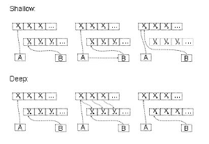

Ruby e o deep copy
Uma quase alucinada busca de uma forma de fazer deep copy em Ruby, apenas por preguiça de copiar, e pra não ferir o orgulho e repetir código.

Eu queria testar se uma chave de minha base de dados realmente estava como chave única.
O código estava nesse ponto, e por orgulho e preguiça, eu não queria copiar e colar a atribuição de valores:
test "Não pode salvar produtos com descrição existente" do
produto = Produto.new()
produto.unidade = 'UN'
produto.preco = 1.25
produto.categoria = 'beb'
produto.descricao = "Descrição supimpa"
mesmo_produto = produto # isso não vai dar certo...
produto.save
assert_not mesmo_produto.save, "Salvou duas vezes produto com mesma descrição"
end
Aquele mesmo_produto = produto não fez o que eu queria, mas eu já estava desconfiando. Afinal, eu apenas dei um apelido para um objeto existente. Logo pensei em Deep Copy, mas após algumas leituras, desisti. Teria que usar uma gem para isso, ou fazer a cópia na unha.
Encontrei em algum lugar (realmente perdi a referência e nem me lembro como foi que encontrei) essa dica:
test "Não pode salvar produtos com descrição existente" do
produto = Produto.new()
produto.unidade = 'UN'
produto.preco = 1.25
produto.categoria = 'beb'
produto.descricao = "Descrição supimpa"
mesmo_produto = Produto.new(produto.attributes)
produto.save
assert_not mesmo_produto.save, "Salvou duas vezes produto com mesma descrição"
end
Ainda não gostei. Mas o que é que tem nesse produto.attributes? Eu, um quase
hacker, fui pro console da minha aplicação fuçar nas coisas:
$ rails c
Running via Spring preloader in process 6543
Loading development environment (Rails 5.0.0.1)
2.3.0 :001 > p = Produto.new
=> #<Produto id: nil, descricao: nil, categoria: nil, preco: nil, unidade: nil, created_at: nil, updated_at: nil>
2.3.0 :002 > p.attributes
=> {"id"=>nil, "descricao"=>nil, "categoria"=>nil, "preco"=>nil, "unidade"=>nil, "created_at"=>nil, "updated_at"=>nil}
2.3.0 :003 >
Próxima tentativa, mais ao meu gosto e experiência com Python:
test "Não pode salvar produtos com descrição existente" do
salva_produto = Proc.new(|mensagem| {
p = Produto.new({
"id" => nil,
"descricao" => "Descrição supimpa",
"categoria" => "beb",
"preco" => 1.25,
"unidade" => "UN",
"created_at" => nil,
"updated_at" => nil,
}
assert p.save, mensagem
})
# salva primeiro, tem que dar certo.
salva_produto "Não salvou produto inexistente"
# salva segundo, tem que dar erro.
salva_produto "Salvou duas vezes produto com mesma descrição"
end
E se eu criar um proc?
test "Não pode salvar produtos com descrição existente" do
salva_produto = proc {
Produto.new({
"id" => nil,
"descricao" => "Descrição supimpa",
"categoria" => "beb",
"preco" => 1.25,
"unidade" => "UN",
"created_at" => nil,
"updated_at" => nil,
}).save
}
# salva primeiro, tem que dar certo.
assert salva_produto.call, "Não salvou produto inexistente"
# salva segundo, tem que dar erro.
assert_not salva_produto.call, "Salvou duas vezes produto com mesma descrição"
end
Agora sim, voltou a ter cara de teste e é só bater o olho pra entender o que está acontecendo.